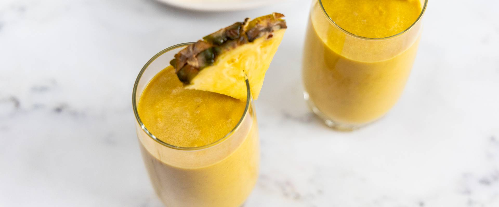

Ananászos smoothie

Ezzel az ínycsiklandó smoothie-val két legyet üthetsz egy csapásra: nem csak egy finom és tápláló fogás, amelyet rohanós napokon reggelire vagy tízóraira is beilleszthetsz, de a benne levő alapanyagok még az emésztésedet is feltúrbózzák, így segítenek a fogyásban.
Hozzávalók
- 30 dkg friss ananász felkockázva
- 2 db banán
- 5 dkg zabpehely
- fél tk gyömbér
- fél tk kurkuma
- 1 ek finomítatlan kókuszolaj
- 1 dl növényi ital (mandula, kókusz, szója, stb.)
Elkészítés
- Ha egész ananászt használunk, akkor pucoljuk meg, kockázzuk fel, és 300 grammot tegyünk egy turmixgépbe. Adjuk hozzá az összes többi hozzávalót is, és 1-2 perc alatt turmixoljuk selymes állagúra.
- Öntsük poharakba, és azonnal fogyasszuk. A maradékot maximum 2 napig hűtőben tároljuk.